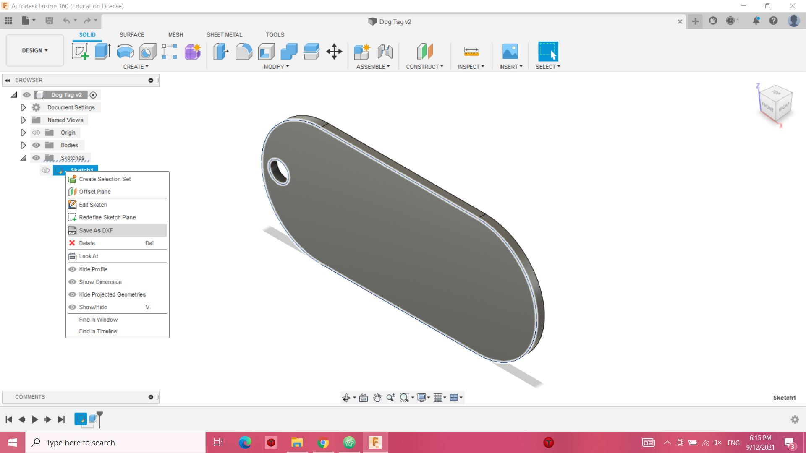
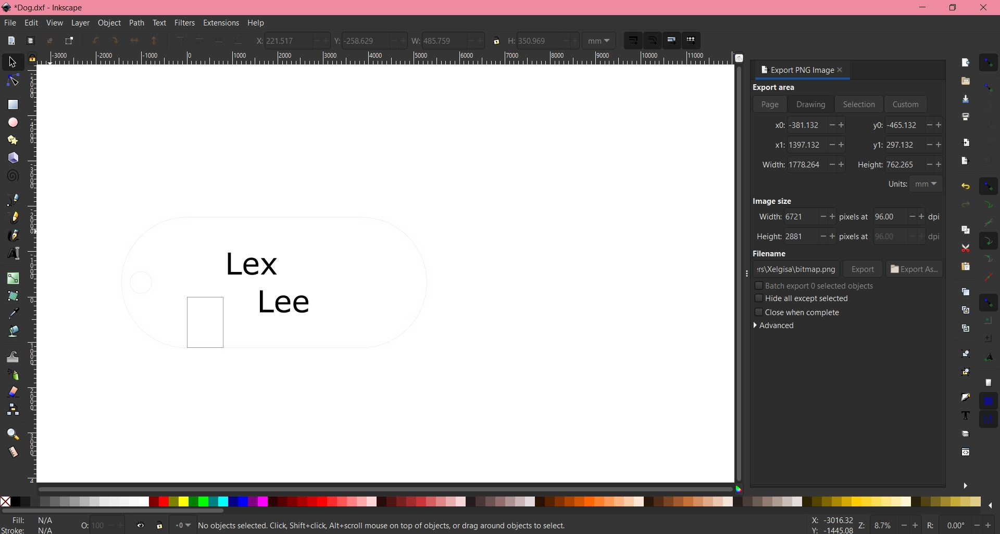

Using InkScape
Using InkScape
This page explains the process of laser cutting
Step 1
- Design a sketch that u want to cut out and save it as DXF This step is to design and check whether the proportions look correct for the final product
- Set the colours for the line in InkScape for cutting or engraving This step is to make which colour line will be cutting for example red would be cutting and black would be engraving
- Save file as SGV or DXF This are some of the proper formats for coreldraw which is the laser cutting program
- Upload file to laser cutter e.g coreldraw


Step 2

Step 3
Save as SGV if not letters won't appear when uploading which can be seen in the projects why design and final laser cut look different
Step 4